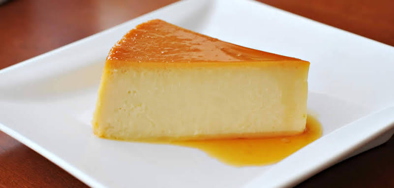

Flan Cacero

El flan casero es uno de los postres más tradicionales de la repostería. Su textura cremosa, su delicado sabor a vainilla y la irresistible capa de caramelo lo convierten en un favorito para reuniones familiares y celebraciones. Con pocos ingredientes y una preparación sencilla, podrás disfrutar de un postre clásico que nunca pasa de moda.